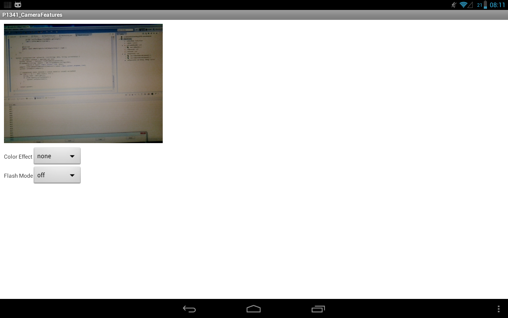
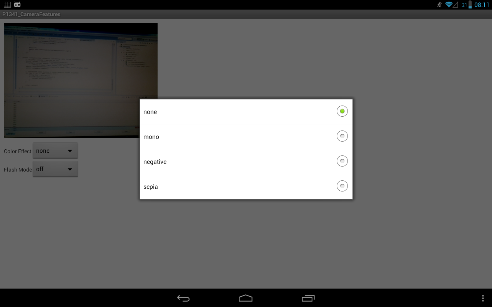
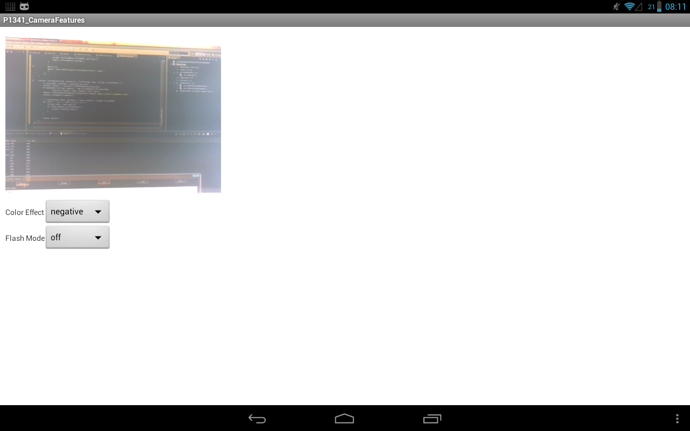
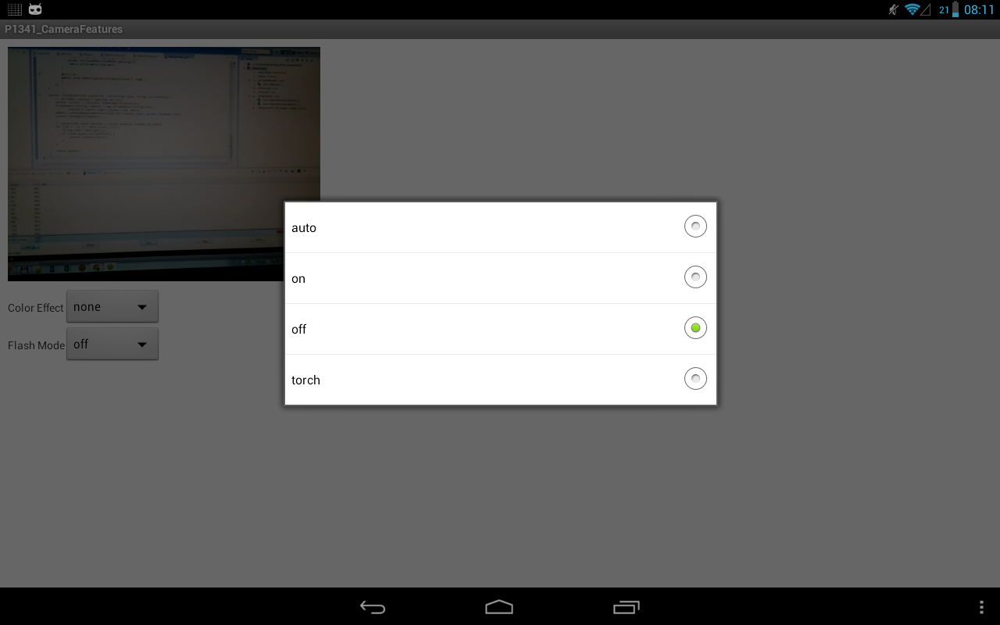
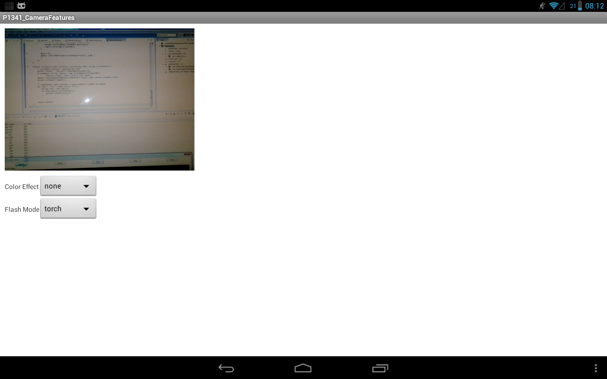

В этом уроке:
- меняем настройки камеры
По работе с камерой нам осталась одна тема – настройки камеры. Т.е. это разрешения, эффекты, фокусы, качество, вспышка и пр. Полный список настроек можно посмотреть в документацие (обращайте внимание на минимальную версию API).
Для работы с настройками используется объект Camera.Parameters. Он содержит кучу методов, которые можно разделить на несколько групп.
Методы is<…>Supported позволяют узнать поддерживается ли данная опция/настройка камерой.
Методы get<…>Supported и getMax<…> предоставят вам набор поддерживаемых значений или максимальное значение опции/настройки.
Методы get<…> вернут текущее значение настройки.
Методы set<…> установят текущее значение настройки.
В этом уроке рассмотрим на практике работу с парой настроек: цветовые эффекты и режимы вспышки. А также я опишу работу с настройками, которые выбиваются из общего алгоритма.
Напомню, что в Уроке 132 мы разбирались с тем, как совместить размеры экрана и превью камеры, и учесть поворот устройства. А в Уроке 133 – как сохранить фото или видео. В этом уроке я не буду это использовать, чтобы не повторяться и не усложнять материал.
Создадим проект:
Project name: P1341_CameraFeatures
Build Target: Android 4.0
Application name: CameraFeatures
Package name: ru.startandroid.develop.p1341camerafeatures
Create Activity: MainActivity
В strings.xml добавим строки:
<string name="color_effect">Color Effect</string>
<string name="flash_mode">Flash Mode</string>
main.xml:
<?xml version="1.0" encoding="utf-8"?>
<LinearLayout
xmlns:android="http://schemas.android.com/apk/res/android"
xmlns:tools="http://schemas.android.com/tools"
android:layout_width="match_parent"
android:layout_height="match_parent"
android:orientation="vertical"
android:padding="10dp">
<SurfaceView
android:id="@+id/surfaceView"
android:layout_width="400dp"
android:layout_height="300dp"
android:layout_marginBottom="10dp">
</SurfaceView>
<TableLayout
android:layout_width="wrap_content"
android:layout_height="wrap_content">
<TableRow
android:layout_width="wrap_content"
android:layout_height="wrap_content"
android:gravity="center_vertical">
<TextView
android:layout_width="wrap_content"
android:layout_height="wrap_content"
android:text="@string/color_effect">
</TextView>
<Spinner
android:id="@+id/spEffect"
android:layout_width="wrap_content"
android:layout_height="wrap_content">
</Spinner>
</TableRow>
<TableRow
android:layout_width="wrap_content"
android:layout_height="wrap_content"
android:gravity="center_vertical">
<TextView
android:layout_width="wrap_content"
android:layout_height="wrap_content"
android:text="@string/flash_mode">
</TextView>
<Spinner
android:id="@+id/spFlash"
android:layout_width="wrap_content"
android:layout_height="wrap_content">
</Spinner>
</TableRow>
</TableLayout>
</LinearLayout>На экране у нас SurfaceView для вывода изображения и два спиннера настроек. Первый будет предоставлять выбор цветовых эффектов, а второй – режимы работы вспышки. Про спиннеры я рассказывал в Уроке 56.
В манифесте добавляем права на работу с камерой
<uses-permission android:name="android.permission.CAMERA"/>
MainActivity.java:
package ru.startandroid.develop.p1341camerafeatures;
import java.util.List;
import android.app.Activity;
import android.hardware.Camera;
import android.hardware.Camera.Parameters;
import android.os.Bundle;
import android.view.SurfaceHolder;
import android.view.SurfaceView;
import android.view.View;
import android.widget.AdapterView;
import android.widget.AdapterView.OnItemSelectedListener;
import android.widget.ArrayAdapter;
import android.widget.Spinner;
public class MainActivity extends Activity {
SurfaceView surfaceView;
Camera camera;
@Override
protected void onCreate(Bundle savedInstanceState) {
super.onCreate(savedInstanceState);
setContentView(R.layout.main);
surfaceView = (SurfaceView) findViewById(R.id.surfaceView);
SurfaceHolder holder = surfaceView.getHolder();
holder.addCallback(new SurfaceHolder.Callback() {
@Override
public void surfaceCreated(SurfaceHolder holder) {
try {
camera.setPreviewDisplay(holder);
camera.startPreview();
} catch (Exception e) {
e.printStackTrace();
}
}
@Override
public void surfaceChanged(SurfaceHolder holder, int format,
int width, int height) {
}
@Override
public void surfaceDestroyed(SurfaceHolder holder) {
}
});
}
@Override
protected void onResume() {
super.onResume();
camera = Camera.open();
initSpinners();
}
@Override
protected void onPause() {
super.onPause();
if (camera != null)
camera.release();
camera = null;
}
void initSpinners() {
// Цветовые эффекты
// получаем список цветовых эффектов
final List<String> colorEffects = camera.getParameters()
.getSupportedColorEffects();
Spinner spEffect = initSpinner(R.id.spEffect, colorEffects, camera
.getParameters().getColorEffect());
// обработчик выбора
spEffect.setOnItemSelectedListener(new OnItemSelectedListener() {
@Override
public void onItemSelected(AdapterView<?> arg0, View arg1,
int arg2, long arg3) {
Parameters params = camera.getParameters();
params.setColorEffect(colorEffects.get(arg2));
camera.setParameters(params);
}
@Override
public void onNothingSelected(AdapterView<?> arg0) {
}
});
// Режимы вспышки
// получаем список режимов вспышки
final List<String> flashModes = camera.getParameters()
.getSupportedFlashModes();
// настройка спиннера
Spinner spFlash = initSpinner(R.id.spFlash, flashModes, camera
.getParameters().getFlashMode());
// обработчик выбора
spFlash.setOnItemSelectedListener(new OnItemSelectedListener() {
@Override
public void onItemSelected(AdapterView<?> arg0, View arg1,
int arg2, long arg3) {
Parameters params = camera.getParameters();
params.setFlashMode(flashModes.get(arg2));
camera.setParameters(params);
}
@Override
public void onNothingSelected(AdapterView<?> arg0) {
}
});
}
Spinner initSpinner(int spinnerId, List<String> data, String currentValue) {
// настройка спиннера и адаптера для него
Spinner spinner = (Spinner) findViewById(spinnerId);
ArrayAdapter<String> adapter = new ArrayAdapter<String>(this,
android.R.layout.simple_spinner_item, data);
adapter.setDropDownViewResource(android.R.layout.simple_spinner_dropdown_item);
spinner.setAdapter(adapter);
// определеяем какое значение в списке является текущей настройкой
for (int i = 0; i < data.size(); i++) {
String item = data.get(i);
if (item.equals(currentValue)) {
spinner.setSelection(i);
}
}
return spinner;
}
}В onCreate мы, как обычно, определяем SurfaceView, холдер и callback для холдера.
В onResume подключаемся к камере и вызываем метод initSpinners, который заполнит спиннеры значениями настроек. Об этом чуть ниже.
В onPause освобождаем ресурсы.
В initSpinners мы поочередно настраиваем спиннеры. Сначала тот, который для выбора цветовых эффектов.
Используем метод getParameters, чтобы получить текущие настройки камеры. И метод getSupportedColorEffects, чтобы из этих настроек получить цветовые эффекты, которые поддерживаются этим устройством. Результат приходит в виде списка строк.
Далее вызываем свой метод initSpinner (чуть ниже обсудим и его), который заполнит спиннер. На вход ему передаем:
- id спиннера
- набор значений, которые он будет отображать
- текущее значение настройки цветовых эффектов, которые мы получаем из настроек методом getColorEffect
Методом setOnItemSelectedListener ставим обработчик выбора значения из спиннера. При выборе мы получаем настройки, устанавливаем выбранный цветовой эффект методом setColorEffect и присваиваем эти настройки камере методом setParameters. После этого камера подхватит новые настройки и мы увидим в превью результат.
Аналогично мы настраиваем спиннер для режимов вспышки. Получаем доступные режимы, получаем текущий, заполняем спиннер и в обработчике передаем камере выбранный режим.
Метод initSpinner находит спиннер, создает для него адаптер с полученными данными и устанавливает текущее значение спиннера соответственно текущей настройке камеры.
Читатель на форуме абсолютно верно заметил, что имеет смысл в код добавить проверку на null для списков, которые мы получаем от методов getSupportedColorEffects и getSupportedFlashModes. Т.к. камера может вообще не поддерживать эти настройки.
Все сохраняем и запускаем приложение.
Видим такой экран

Попробуем применить цветовой эффект. Жмем спиннер Color Effect и видим варианты.

У вас, скорее всего, будут другие, это от камеры девайса зависит.
Я выберу negative и получаю такую картинку

Снова выберу цветовой эффект none.
Теперь проверим режимы вспышки. Жмем Flash Mode.

аuto – камера сама решит, использовать ей вспышку или нет
on – вспышка будет использована при снимке
off - вспышка не будет использована при снимке
torch – режим фонарика
Я выберу torch и вспышка начинает гореть, это видно в отражении монитора.

Почти все остальные настройки меняются по такому же алгоритму. Я не буду все их рассматривать. Если будут какие-либо вопросы по ним, давайте обсуждать на форуме.
Есть пара особенных настроек, с другим алгоритмом. О них поговорим. Примеры тут у меня не получится сделать, поэтому без них. Буду использовать код и картинки из документацие.
Замер света и фокус
Для хорошей съемки камере надо:
- знать на чем фокусироваться, чтобы не получить размытую картинку
- определить уровень освещенности, чтобы не получить пересвеченную или затемненную картинку.
Мы можем указать те области экрана, которые будут использоваться для этих целей. В документацие приводится пример задания областей замера света.
// Create an instance of Camera
mCamera = getCameraInstance();
// set Camera parameters
Camera.Parameters params = mCamera.getParameters();
if (params.getMaxNumMeteringAreas() > 0){ // check that metering areas are supported
List<Camera.Area> meteringAreas = new ArrayList<Camera.Area>();
Rect areaRect1 = new Rect(-100, -100, 100, 100); // specify an area in center of image
meteringAreas.add(new Camera.Area(areaRect1, 600)); // set weight to 60%
Rect areaRect2 = new Rect(800, -1000, 1000, -800); // specify an area in upper right of image
meteringAreas.add(new Camera.Area(areaRect2, 400)); // set weight to 40%
params.setMeteringAreas(meteringAreas);
}
mCamera.setParameters(params);Здесь мы получаем камеру и ее параметры. Методом getMaxNumMeteringAreas определяем, кол-во областей, которое сможет учитывать камера. Если значение = 0, то эта функция не поддерживается.
Затем создаем список и помещаем в него пару областей. Область представляет из себя Rect-объект. Он должен лежать в пределах от -1000,-1000 до 1000,1000. Т.е. превью камеры представлено как система координат, у которой центр (0,0) находится в центре экрана и обе оси по обоим направлениям имеют длину 1000. И в этой системе мы задаем Rect.
Картинка из документации

На рисунке показано где будет расположен Rect с значениями 333,333,666,666.
Созданный Rect оборачивается в объект Camera.Area. При этом указывается вес, от 1 до 1000. Чем больше вес области, тем больше значения будет придаваться полученным из нее данным по замеру света.
Полученный список с двумя областями передаем параметрам камеры с помощью метода setMeteringAreas. И в конце отдаем параметры камере.
С областями для фокуса аналогично. Метод getMaxNumFocusAreas дает нам кол-во поддерживаемых областей фокуса. Создаем список областей, указывая координаты и вес, и отдаем список методу setFocusAreas.
Распознавание лиц
Для использования этой опции нам необходимо в приложении выполнить следующие действия:
- определить, что такая опция поддерживается
- создать слушателя, который будет получать данные по распознанным лицам
- отдать этого слушателя камере
- включать режим определения лиц после каждого старта превью
Примеры кода из документации:
class MyFaceDetectionListener implements Camera.FaceDetectionListener {
@Override
public void onFaceDetection(Face[] faces, Camera camera) {
if (faces.length > 0) {
Log.d("FaceDetection", "face detected: " + faces.length
+ " Face 1 Location X: " + faces[0].rect.centerX()
+ "Y: " + faces[0].rect.centerY());
}
}
}Это создание класса-слушателя, который реализует интерфейс Camera.FaceDetectionListener. В методе onFaceDetection будет получать сведения о распознанных лицах (Face) и выводит в лог координаты первого лица (атрибут rect). Правда, судя по документацие, координаты эти будут не экранными, а из знакомой нам уже системы (-1000,-1000) – (1000,1000). Но та же документация любезно дает код для настройки матрицы преобразования с учетом расположения и поворота камеры.
Также Face имеет атрибуты:
id – идентификатор лица
leftEye – координаты центра левого глаза, может быть null
rightEye - координаты центра правого глаза, может быть null
mouth - координаты центра рта, может быть null
score – уверенность системы в том, что это реальное лицо. Варьируется от 0, до 100. Рекомендуется отфильтровывать лица, с score < 50.
mCamera.setFaceDetectionListener(new MyFaceDetectionListener());Здесь мы созданный слушатель отдаем камере с помощью метода setFaceDetectionListener.
public void startFaceDetection(){
// Try starting Face Detection
Camera.Parameters params = mCamera.getParameters();
// start face detection only *after* preview has started
if (params.getMaxNumDetectedFaces() > 0){
// camera supports face detection, so can start it:
mCamera.startFaceDetection();
}
}Это метод для включения режима распознавания. Предварительно идет проверка, что опция поддерживается.
Ну а далее вызывайте метод startFaceDetection после каждого вызова startPreview. Обычно это происходит в surfaceCreated и surfaceChanged (см. Урок 132).